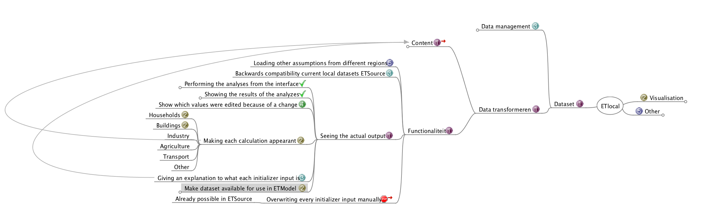
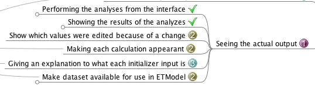
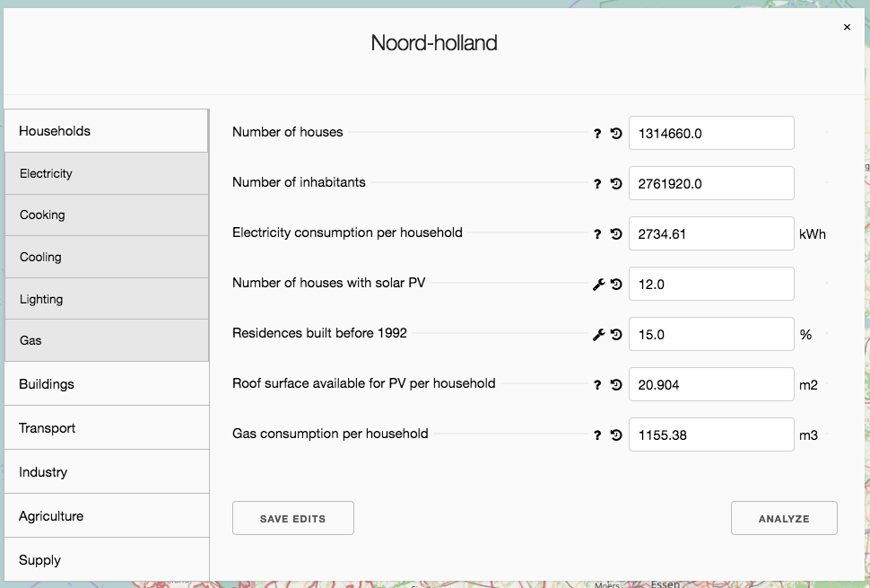
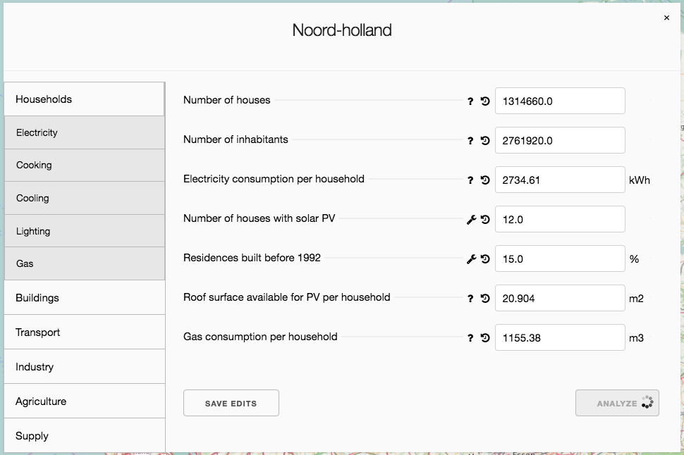
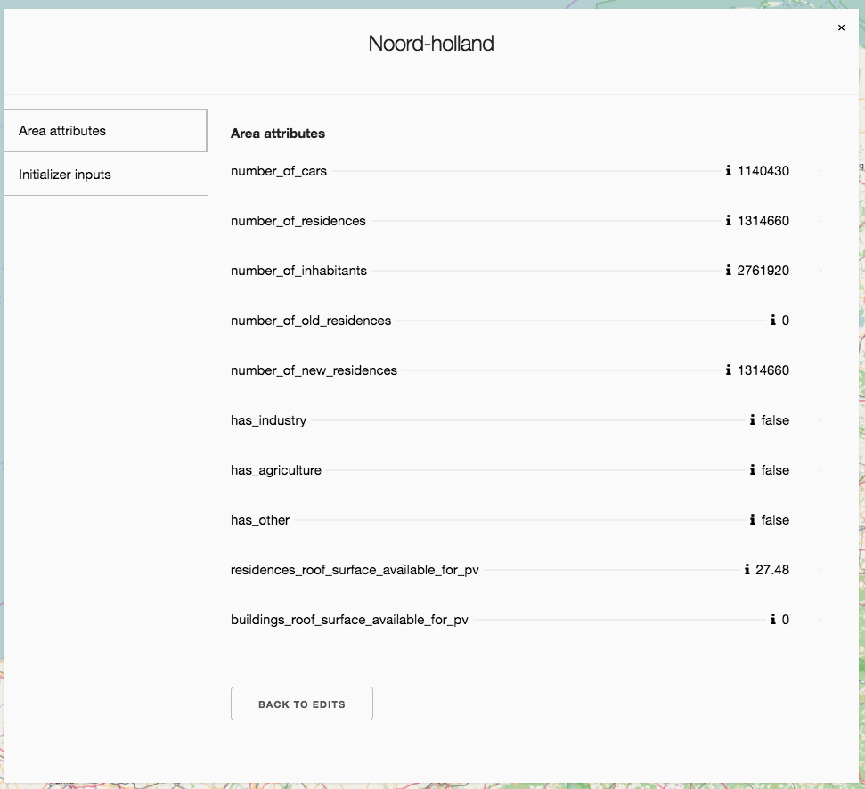
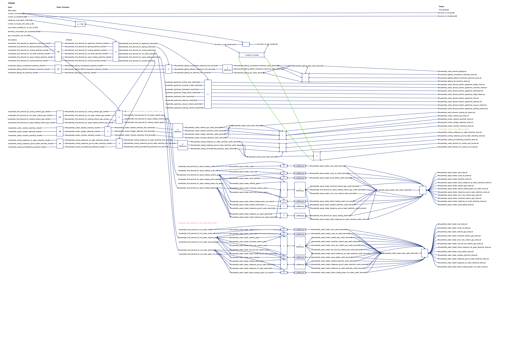
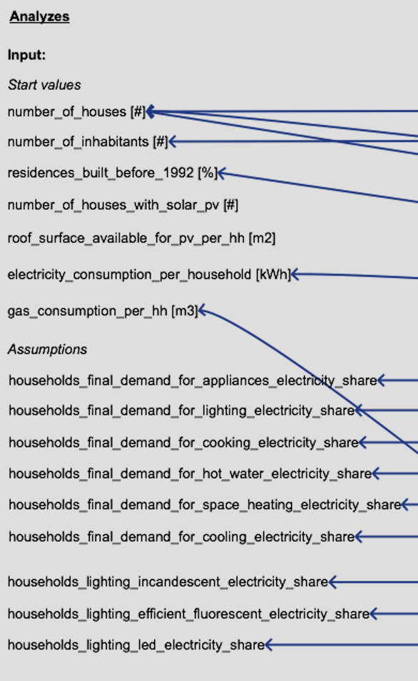
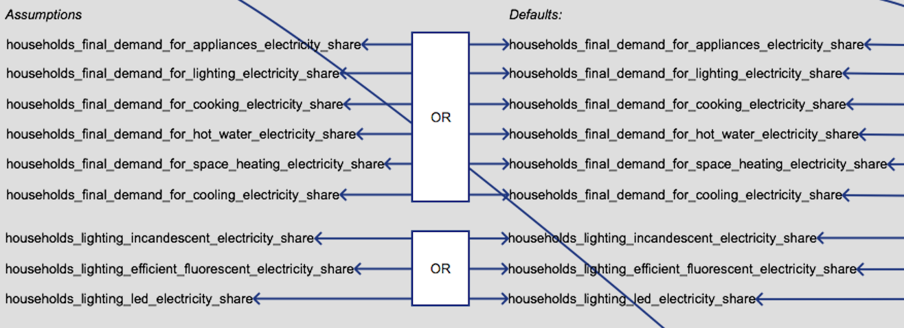
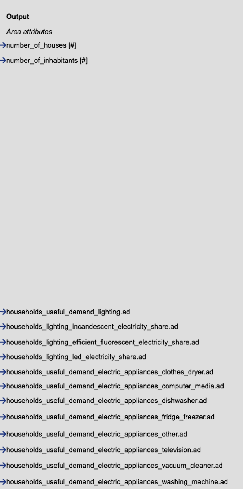
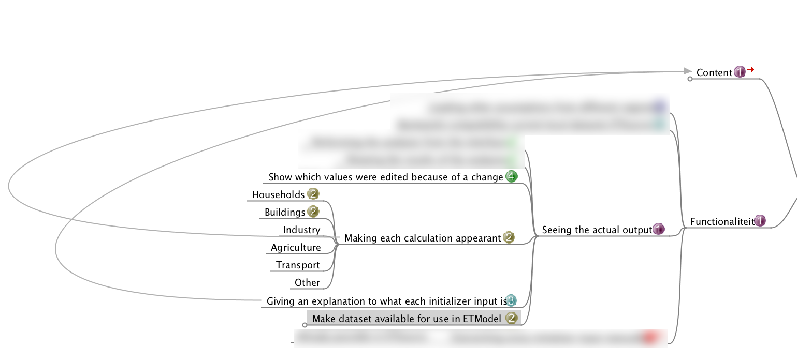

class: center, middle # ETLocal ## Sprint meeting --- # Agenda 1. Overview 2. What did we do the previous sprint? 3. What didn't we do? 4. What are we going to do? --- # Overview:  --- # What did we do the previous sprint?  ---  ---  ---  --- # Schematic households analysis  --- # Schematic households analysis (inputs)  --- # Schematic households analysis (inputs / graph)  --- # Schematic households analysis (outputs)  --- # To summarize - Made it possible to run the analyses from the front-end - Showing the results in a separate window - Restructured the interface - Created schematic of the households analysis --- # What didn't we do? **Dependency to analyses** - Make each calculation apparent - Giving an explanation to each initializer input  **Lack of time:** - Try-out the dataset in a separate (ETM) environment - Commit and use as stable dataset in ETM --- # What are we going to do? **Etlocal:** - Focus on the analyses: households (2 days max), buildings (2 days), industry (rest): - Creating a schematic: - Re-evaluate the current ETLocal analysis - Translate the Excel analysis into ETLocal analysis - Agree upon schematic JB, CK, BS - Change the ETLocal analysis - Explain the calculation in the front-end - Adding download/export dataset button (internal use)(1 day) **non-ETlocal:** - CSV dump of a scenario (1 day) - I have 1 day off --- class: center, middle # End